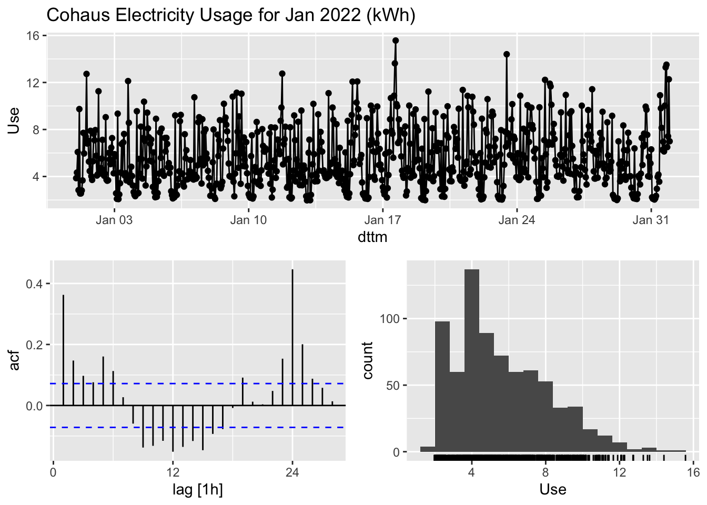
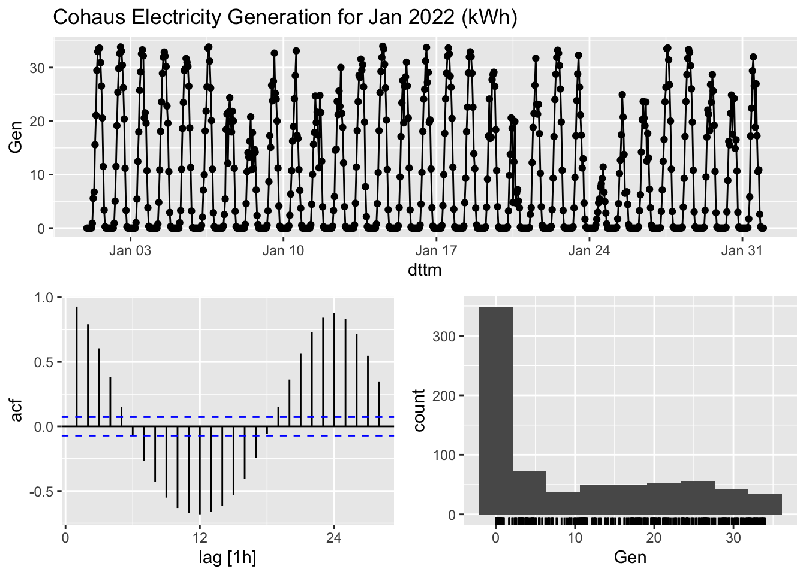
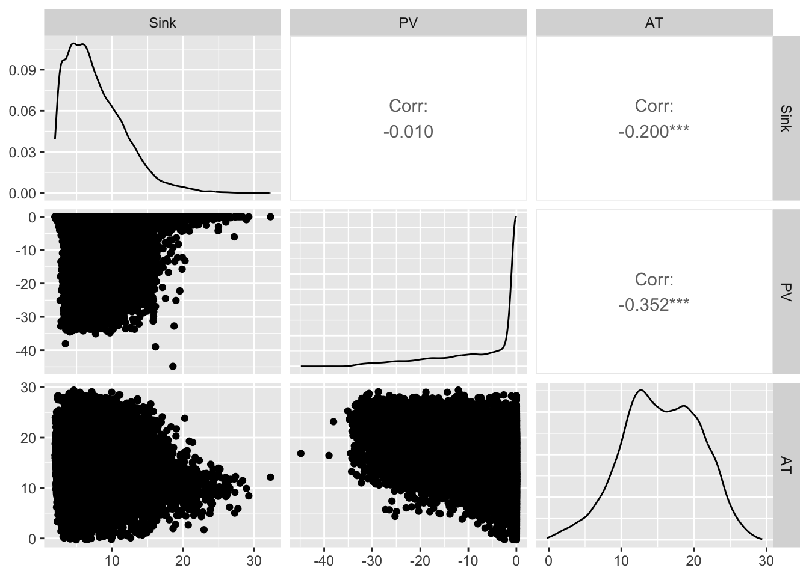
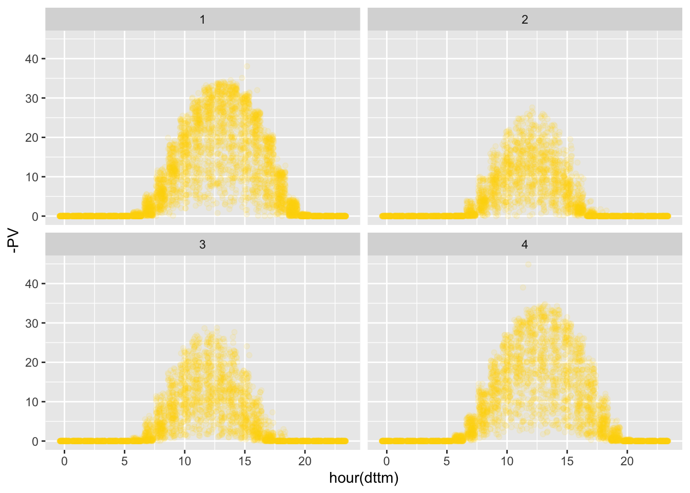
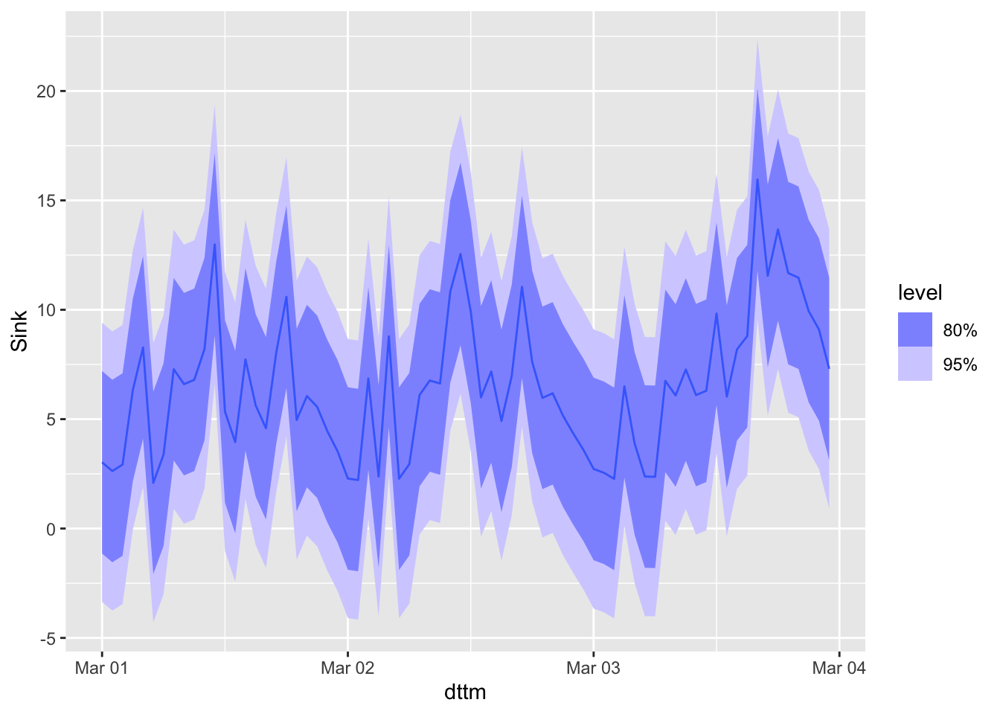
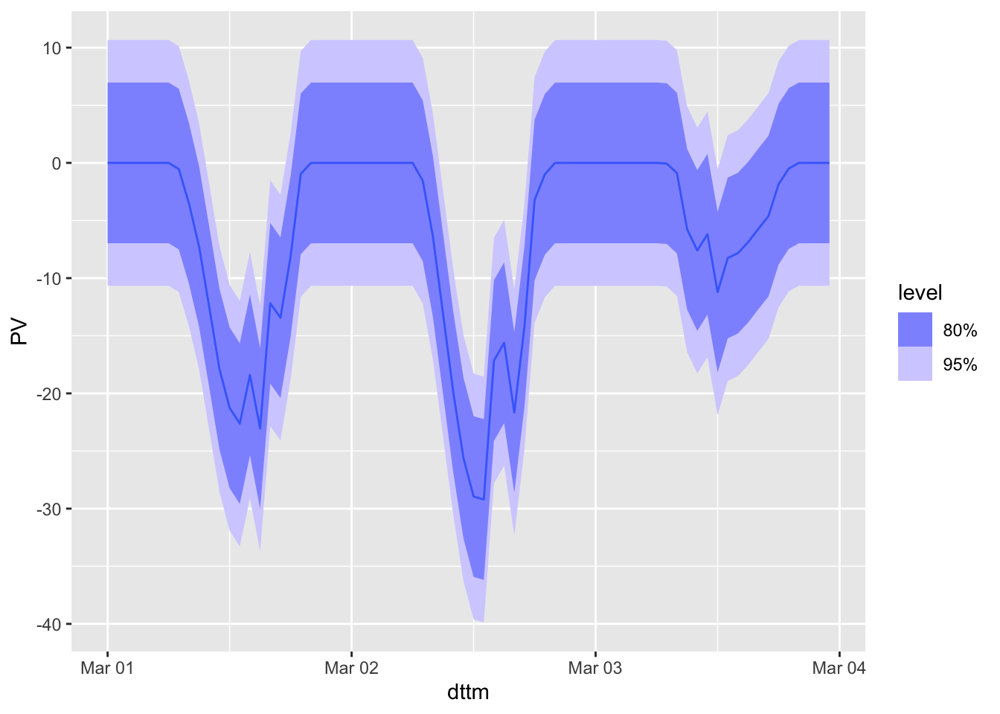

library(tidyverse)
library(readxl)
library(fpp3)
library(GGally)2 Data
2.1 Goal
The objective of this project is to produce 3-day forecasts of net energy use for the Cohaus residential development of 20 apartments at 11-13 Surrey Crescent, Grey Lynn, Auckland.
2.2 Data Source
Cohaus was completed in July 2021 and teh community moved in shortly thereafter,, Cohaus has installed solar generation capacity that is applied locally, and if any surplus remains is sold back to the electricity retailer. The data for this project has been collected from the residential development itself (of which the author is an owner-resident). Half hourly kWh electricity use and generation measures are as follows:
APTaggregated apartment electricity useCScommon services (lighting, laundry, bike shed, garden house)EVelectric vehicle chargersHPcentralised hot water and heat pumpsPVphoto-voltaic electricity generation
Net energy use (i.e. drawn from the grid) is calculated by summing the five measures.
# read in cohaus_wide (painful wrangle is in separate wrangle.R)
cohaus_wide <- read_rds("data/cohaus_wide.rds")
cohaus_long <- cohaus_wide |>
pivot_longer(cols = -dttm, names_to = "Name", values_to = "Value")
cohaus_ts <- cohaus_wide |> as_tsibble(index = dttm)cohaus_ts |>
gg_tsdisplay(PV, plot_type = "partial")
cohaus_wide |>
select(APT,EV,CS,HP,PV) |>
ggpairs(progress = FALSE)
cohaus_wide |>
select(Sink,PV,AT) |>
ggpairs(progress = FALSE)
qtrDummy <- function(x,y) {
ifelse(quarter(x) == y, 1, 0)
}
cohaus_ts <- cohaus_ts |>
mutate(qtr1 = qtrDummy(dttm,1),
qtr2 = qtrDummy(dttm,2),
qtr3 = qtrDummy(dttm,3),
qtr4 = qtrDummy(dttm,4)
)
cohaus_ts |>
ggplot(aes(x = hour(dttm), y = -PV)) +
geom_point(alpha = 0.1, col = "gold") +
facet_wrap(~month(dttm))
cohaus_ts |>
ggplot(aes(x = hour(dttm), y = Sink)) +
geom_point(alpha = 0.1, col = "blue") +
facet_wrap(~month(dttm)) 
cohaus_ts |>
ggplot(aes(x = hour(dttm), y = Tdry)) +
geom_point(alpha = 0.05, col = "red") +
facet_wrap(~month(dttm)) 
fit <- cohaus_ts |>
model(snaive = SNAIVE(PV ~ lag("week")),
lm = TSLM(PV ~ season() + qtr2 + qtr3 + qtr4 + workDay + sunUp + Tdry)
)
fit |> select(.model = lm) |> report()Series: PV
Model: TSLM
Residuals:
Min 1Q Median 3Q Max
-25.1933 -2.1550 0.4275 2.0934 18.5465
Coefficients:
Estimate Std. Error t value Pr(>|t|)
(Intercept) 2.58810 0.27189 9.519 < 2e-16 ***
season()day2 -0.06072 0.22645 -0.268 0.788615
season()day3 -0.11177 0.22665 -0.493 0.621915
season()day4 -0.16148 0.22656 -0.713 0.476011
season()day5 -0.19760 0.22662 -0.872 0.383259
season()day6 -0.21803 0.22666 -0.962 0.336107
season()day7 -0.46375 0.22702 -2.043 0.041082 *
season()day8 -2.45551 0.24723 -9.932 < 2e-16 ***
season()day9 -6.38545 0.28123 -22.705 < 2e-16 ***
season()day10 -10.69363 0.28137 -38.005 < 2e-16 ***
season()day11 -14.49122 0.28206 -51.376 < 2e-16 ***
season()day12 -17.01445 0.28290 -60.143 < 2e-16 ***
season()day13 -18.18177 0.28349 -64.136 < 2e-16 ***
season()day14 -17.90846 0.28380 -63.102 < 2e-16 ***
season()day15 -16.68659 0.28391 -58.774 < 2e-16 ***
season()day16 -13.96247 0.28369 -49.218 < 2e-16 ***
season()day17 -10.23029 0.28313 -36.133 < 2e-16 ***
season()day18 -6.49669 0.28237 -23.008 < 2e-16 ***
season()day19 -3.05869 0.25185 -12.145 < 2e-16 ***
season()day20 -0.87966 0.24510 -3.589 0.000333 ***
season()day21 -0.10984 0.23496 -0.467 0.640151
season()day22 0.22306 0.22668 0.984 0.325101
season()day23 0.13701 0.22653 0.605 0.545311
season()day24 0.06236 0.22646 0.275 0.783027
qtr2 2.92212 0.10729 27.236 < 2e-16 ***
qtr3 1.80965 0.12545 14.426 < 2e-16 ***
qtr4 -0.35285 0.09682 -3.645 0.000269 ***
workDayTRUE -0.04380 0.06999 -0.626 0.531473
sunUpTRUE 1.02438 0.16743 6.118 9.66e-10 ***
Tdry -0.24079 0.01122 -21.464 < 2e-16 ***
---
Signif. codes: 0 '***' 0.001 '**' 0.01 '*' 0.05 '.' 0.1 ' ' 1
Residual standard error: 4.5 on 18928 degrees of freedom
Multiple R-squared: 0.7185, Adjusted R-squared: 0.7181
F-statistic: 1666 on 29 and 18928 DF, p-value: < 2.22e-16fit |> select(.model = snaive) |>
forecast(h = 24*3) |>
autoplot()